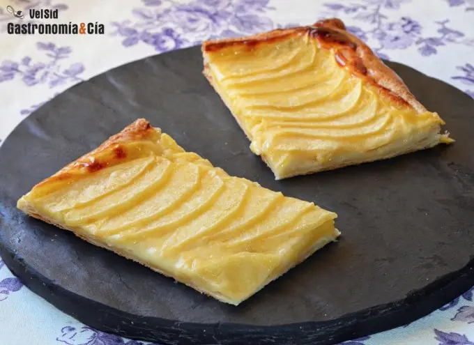
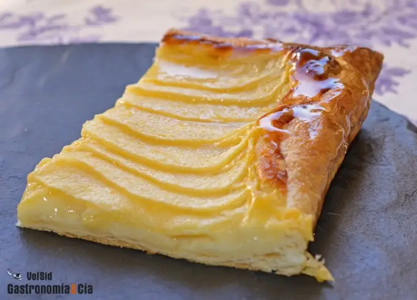

Postre
Tarta de Manzana
Indice
Ingredientes
- 1 lámina de hojaldre fresco
- 2 natillas (unos 250 gramos)
- 2 manzanas (variedad al gusto, las Golden van bien)
- almíbar, mermelada o gelatina para cubrir y dar brillo.
Paso a paso
- Precalienta el horno a 220º C con calor arriba y abajo. Extiende la lámina de hojaldre sobre papel vegetal, pínchala con un tenedor para que no suba, sin llegar a los bordes, y colócala en la bandeja del horno.
Bate bien las natillas y viértelas sobre la masa, extendiéndolas de manera uniforme y dejando un dedo aproximadamente de su contorno libre, esta parte del hojaldre subirá.

- Lava y pela las manzanas y a continuación córtalas en medias lunas finas, puedes recordar cómo cortar las manzanas para una tarta en este post.
Coloca las manzanas sobre las natillas de forma armoniosa, y una vez lista, introdúcela en el horno habiendo alcanzado la temperatura indicada, ponla a altura media.
Hornea la tarta de manzana durante 20 minutos o hasta que los bordes del hojaldre se hayan dorado, entonces retírala y pásala a una rejilla para que se enfríe y que la base se mantenga crujiente.
- Prepara la gelatina, el almíbar o la mermelada para cubrir. Si te decides por un almíbar, pon unas tres cucharadas soperas de azúcar y una o dos de agua. Lleva a ebullición y deja cocer unos minutos, hasta que obtengas un almíbar ligero. Pinta las manzanas y el hojaldre con ayuda de un pincel de cocina.
Sirve la tarta de hojaldre con manzana cortada en porciones, posiblemente sea necesario disponer de suficiente cantidad como para repetir, a tus invitados les encantará.
Resultado final
